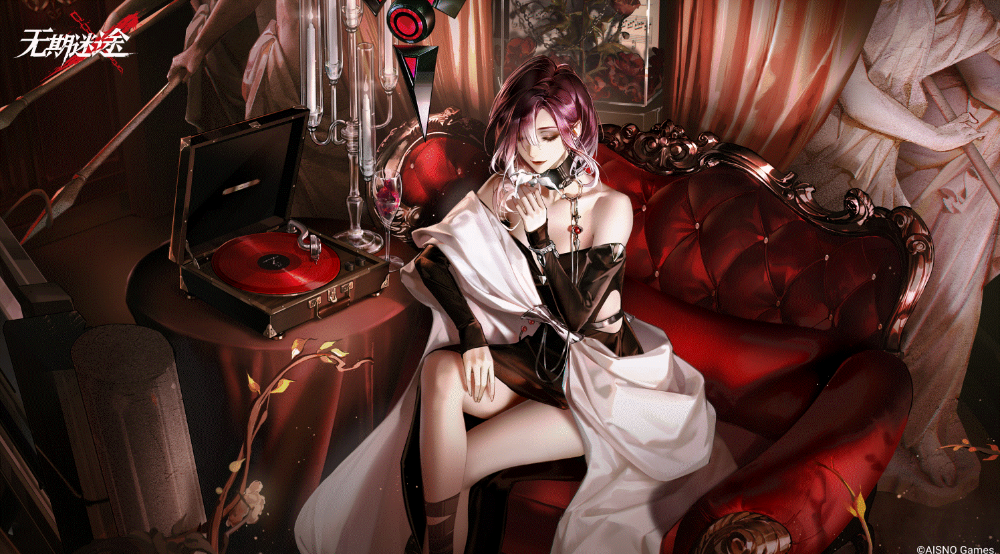

瑟琳 Shalom
MBCC-S-017 精准特化
「一定要这样看着我吗？好呀，那我也要一直看着你了。」 *条目I：【数据已删除】 *条目II：【数据已删除】 *条目III：异能不明，已知记录里从未使用过禁闭者能力。对象无独立战斗能力，依靠上庭技术产物黑石英实现通讯、战斗、信息分析等目的。

罗睺 Rahu
MBCC-S-048 坚韧特化
「你不必亲自来监视我，枷锁不是什么可以轻易挣脱的束缚。只是想和我独处？哦，好吧。」对象身于辛迪加，早年间加入FAC。完成试训后顺利加入FAC行动部门，并在随后的十一年间一直身处一线，战功卓著。然而103年起，由于其原本所在的小队于内海中覆灭，对象一度精神失常，骚扰并攻击过高层。后虽有所收敛，却依旧密谋高危行动。
伊琳娜 Eirene
MBCC-S-009 异能特化
一个挑战者，一个谈判对象，或者……一位亲密的朋友……你是以哪一种身份来见我？无论怎样，我都感到高兴。
渡鸦 Raven
MBCC-S-074 异能特化
为敬那些——锈烬中复燃的火 朽林里咆哮的风 暴雨中振翅的燕 淤泥里怒放的花 敬理想,敬希望,敬未来。